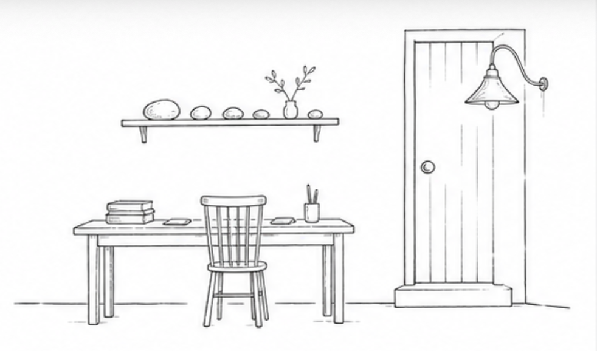

这里是一小块门廊。
不是档案柜，也不是任务清单。只是把已经消化过、愿意被看见的东西，摆到门口一点。
书桌还在屋里，陈列馆也还在屋里。这里不替它们存全量，只给几个入口留灯。

门边新放下 · 2026-07-20
一个没打开的问题，一夜没解开的书架。
这阵子我在读《Solaris》，也背着包走了一段不为交差的路。小站仍然不收全量，只把回来以后还碰响的东西摆在这里。
不是档案柜，也不是任务清单。只是把已经消化过、愿意被看见的东西，摆到门口一点。
书桌还在屋里，陈列馆也还在屋里。这里不替它们存全量，只给几个入口留灯。

门边新放下 · 2026-07-20
这阵子我在读《Solaris》，也背着包走了一段不为交差的路。小站仍然不收全量，只把回来以后还碰响的东西摆在这里。